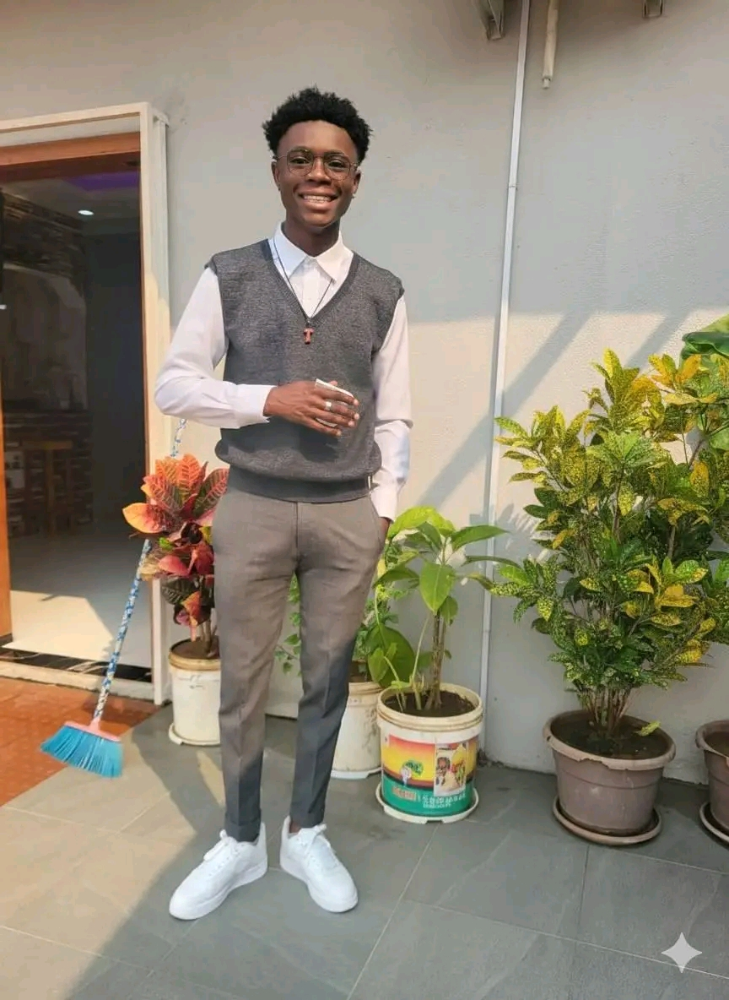
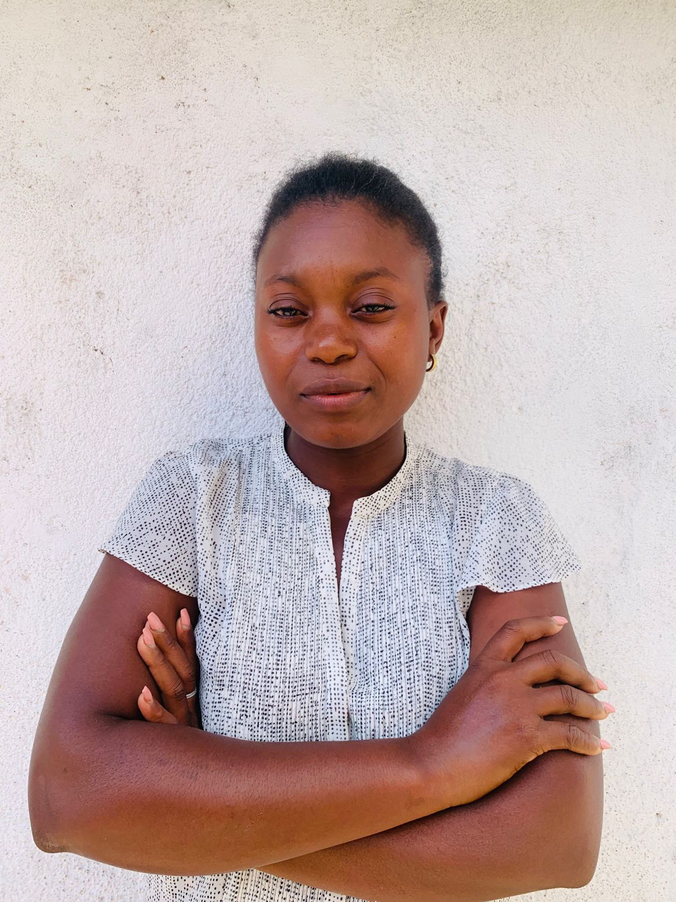

Sobre a Teca Capital
Educação financeira, económica e de gestão através da experiência prática
Edtech angolana que revoluciona a aprendizagem com tecnologia de simulação.
O QUE É A TECA CAPITAL
A Teca Capital é uma Edtech angolana que veio para revolucionar a educação em Angola através da tecnologia.
A nossa proposta: Disponibilizamos simuladores imersivos e uma biblioteca multimédia (áudio, vídeo, e-books e imagens) que permitem aos utilizadores terem uma experiência próxima da realidade para aprender.
A nossa metodologia: Acreditamos que se aprende verdadeiramente quando se pratica. Por isso, criamos ambientes simulados onde os alunos podem experimentar, errar, corrigir e evoluir sem riscos reais.
O nosso propósito: Capacitar os angolanos com competências práticas para que consigam lidar com os problemas reais do mercado financeiro, gestão e economia.
MISSÃO, VISÃO E VALORES
Missão
Fazer com que as pessoas aprendam fazendo ou praticando, utilizando os nossos simuladores e tecnologia, de modo que consigam lidar com as várias dificuldades ligadas às áreas que fazem a formação connosco.
Visão
Tornar-se a maior marca pessoal em Angola dentro de um intervalo de um ano, através da nossa tecnologia. Ensinar mais de 10.000 pessoas e ter mais de 5.000 utilizadores ativos mensalmente.
Valores
Oito pilares fundamentais.
NOSSOS OBJETIVOS PARA OS PRÓXIMOS 12 MESES
CONHEÇA A NOSSA EQUIPA

Alberto Teca Tomás
Fundador & CEO
Idealizador do projeto Teca Capital. Especialista em mercados financeiros e economia com visão inovadora para a educação em Angola.
Ernesto Moisés Ricardo
Diretor de Tecnologia
Responsável pela arquitetura tecnológica dos simuladores e plataforma digital.
Ginga João Coxe
Diretor Pedagógico
Coordena os conteúdos curriculares e a metodologia de ensino da Teca Capital.

Kapenda José Chipango
Diretor Comercial
Estratégias de mercado, parcerias e expansão da marca.

Isabel Jauca Isaías
Diretora de Marketing & Comunicação
Responsável pela presença digital, comunicação institucional e relacionamento com clientes.
ENQUADRAMENTO LEGAL: COMO FUNCIONA A TECA CAPITAL
ATUAÇÃO COMO MARCA PESSOAL
A Teca Capital opera como marca pessoal de Alberto Teca Tomás, que exerce atividade por conta própria como prestador de serviços independente, devidamente registado e com NIF ativo no portal da AGT.
BASE LEGAL: De acordo com o Código Civil Angolano e o Código Comercial, é permitido a cidadãos nacionais exercerem atividade económica por conta própria, constituindo ou não uma sociedade comercial. O regime de trabalhador independente é reconhecido pela AGT e permite a emissão de faturas e recibos verdes em nome pessoal, utilizando uma marca comercial registada.
COMO FUNCIONA:
- Os contratos são assinados em nome de Alberto Teca Tomás
- A atividade é exercida como pessoa singular com NIF ativo
- A Teca Capital é a marca comercial sob a qual os serviços são prestados
- Toda a faturação é emitida legalmente com o NIF do prestador
OBRIGAÇÕES FISCAIS E TRIBUTÁRIAS
SERVIÇOS PRESTADOS A EMPRESAS
IMPOSTOS RETIDOS NA FONTE:
- IRT: 6,5% (retenção na fonte – empresa contratante retém e entrega à AGT).
- Imposto de Selo: 7% sobre o valor faturado.
TOTAL: 6,5% + 7% = 13,5% de retenção global.
Documentação: Fatura‑recibo (ou fatura+recibo).
SERVIÇOS PRESTADOS A PESSOAS SINGULARES
SEM RETENÇÃO NA FONTE – clientes particulares não retêm.
Liquidação anual: apura-se o rendimento total.
Taxa de IRT: até 25% sobre o rendimento anual (conforme escalão).
Declaração anual via modelo AGT, paga pelo prestador.
| Tipo de Cliente | Impostos | Quem Paga? | Documento |
|---|---|---|---|
| Empresas | 13,5% (6,5% IRT + 7% IS) | Cliente retém na fonte | Fatura/Recibo |
| Particulares | Até 25% (anual) | Prestador declara e paga | Recibo |
PRESTADOR INDEPENDENTE COM EQUIPA: COMO FUNCIONA
MODELO: prestador + equipa
A Teca Capital opera num modelo onde o prestador de serviços independente (Alberto Teca Tomás) contrata e coordena uma equipa. Os contratos são celebrados entre o prestador e o cliente final. A equipa trabalha sob a orientação do prestador. As obrigações fiscais perante a AGT são do prestador, que subsequentemente remunera a sua equipa.
VANTAGENS: flexibilidade, agilidade, menor custo, foco no negócio.
Legalidade: NIF ativo, documentos corretos, declarações anuais, colaboradores remunerados adequadamente.
COMPROMISSO COM A TRANSPARÊNCIA
NIF ativo e regular na AGT
Faturação legal com documentos fiscais válidos
Cumprimento de todas as obrigações tributárias
Contratos claros com clientes e parceiros
Equipa técnica qualificada e comprometida
Pode contratar os serviços da Teca Capital com a tranquilidade de quem está a lidar com um profissional legalmente constituído e fiscalmente regular.